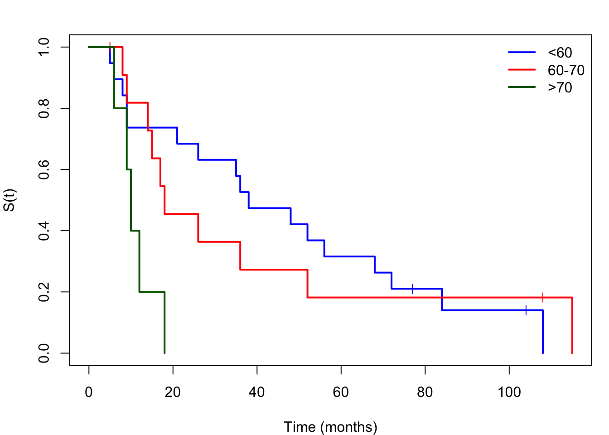
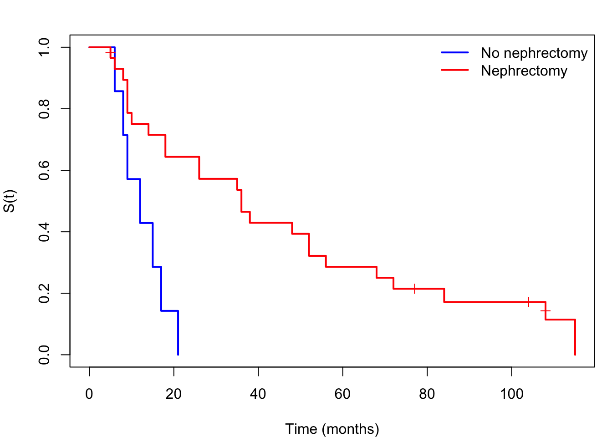
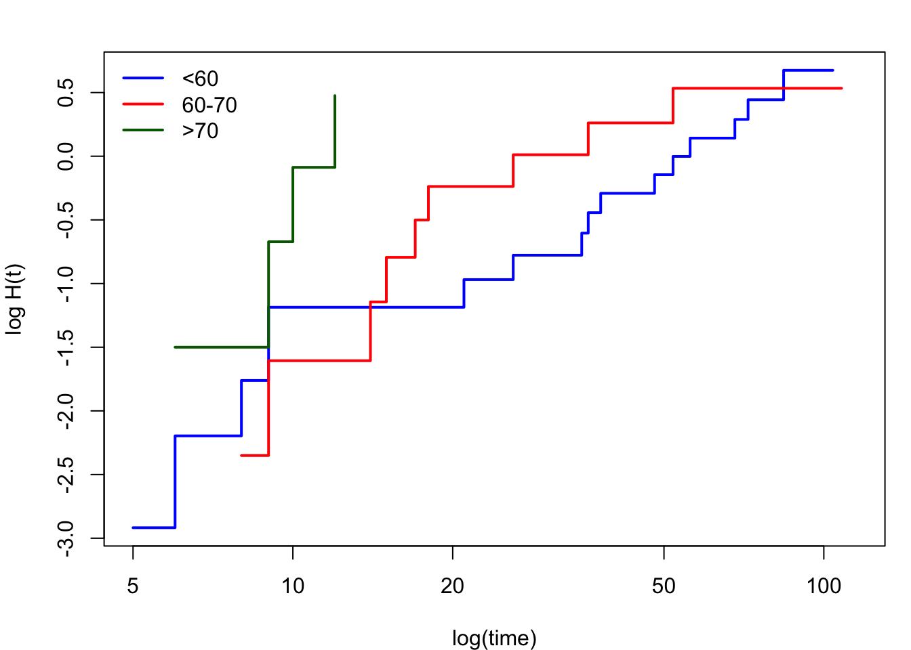
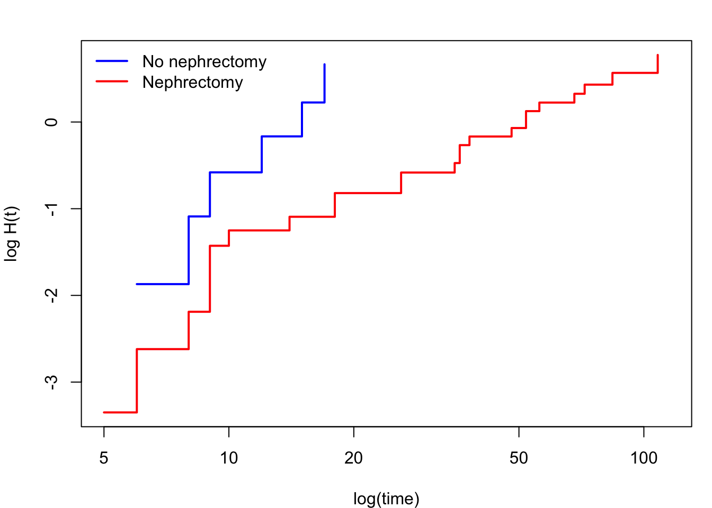

We carry out a complete survival analysis of the hypernephroma (kidney cancer) dataset, illustrating the full pipeline from exploratory analysis through to final model selection.
The dataset contains \(n = 36\) patients. Variables:
We begin with Kaplan–Meier estimates for each covariate separately.

(a) By age group

(b) By nephrectomy
Figure 26.1: Kaplan–Meier estimates by age group (left) and nephrectomy status (right).
Observations: - Age group \(>70\) has clearly worse survival. - Patients who had nephrectomy appear to survive longer on average.
26.3 Step 2: Graphical PH checks

(a) By age group

(b) By nephrectomy
Figure 26.2: Log-cumulative hazard plots. Approximately parallel lines support the proportional hazards assumption.
Both plots show approximately parallel lines, supporting the PH assumption for both age group and nephrectomy.
26.4 Step 3: Fit the Cox model
We fit a series of nested Cox models and select the best using the LRT.
Code
M0 <-coxph(Surv(time, status) ~1, data = h, ties ="breslow")M1 <-coxph(Surv(time, status) ~ age, data = h, ties ="breslow")M2 <-coxph(Surv(time, status) ~ nephrectomy, data = h, ties ="breslow")M3 <-coxph(Surv(time, status) ~ age + nephrectomy, data = h, ties ="breslow")# LRT: age effectcat("Age (M1 vs M0):", -2*(M0$loglik[2] - M1$loglik[2]),"df=2, p =", pchisq(-2*(M0$loglik[2] - M1$loglik[2]), 2, lower.tail =FALSE))# LRT: nephrectomy conditional on agecat("Nephrectomy | age (M3 vs M1):",-2*(M1$loglik[2] - M3$loglik[2]),"df=1, p =", pchisq(-2*(M1$loglik[2] - M3$loglik[2]), 1, lower.tail =FALSE))
Model
Parameters
\(-2\hat\ell\)
LRT vs previous
\(p\)-value
\(M_0\): null
0
177.67
—
—
\(M_1\): age
2
172.17
5.50 (df = 2)
0.064
\(M_3\): age + nephrectomy
3
165.51
6.66 (df = 1)
0.010
Nephrectomy is significant after adjusting for age (\(p=0.010\)); age on its own is only marginal at the 5% level (\(p=0.064\)), though it is retained as an established prognostic factor and, as seen below, the oldest age group specifically does show a clearly elevated hazard. We adopt \(M_3\) as the final model.
Age 60–70 vs \(<60\): \(\hat\psi \approx 1.01\) (95% CI: \([0.44,
2.33]\)) — not significantly different.
Age \(>70\) vs \(<60\): \(\hat\psi \approx 3.83\) (95% CI: \([1.20,
12.20]\)) — patients over 70 have nearly 4 times the hazard.
Nephrectomy (yes vs no): \(\hat\psi \approx 0.24\) (95% CI: \([0.09, 0.67]\)) — nephrectomy reduces hazard by about 76%.
26.6 Step 5: Diagnostics
Code
# Schoenfeld residual testph_test <-cox.zph(M3)print(ph_test)plot(ph_test)# Deviance residualsdev_res <-residuals(M3, type ="deviance")plot(seq_along(dev_res), dev_res, type ="h",xlab ="Patient index", ylab ="Deviance residual")abline(h =c(-2, 2), lty =2, col ="red")
The cox.zph() test should show no significant time trends for age or nephrectomy, confirming the PH assumption. Most deviance residuals should lie within \(\pm 2\).
26.7 Step 6: Comparison with parametric model
As a sensitivity analysis, we compare with a Weibull PH model.
Code
# Weibull model (requires survreg with AFT -> PH conversion)wei_fit <-survreg(Surv(time, status) ~ age + nephrectomy,data = h, dist ="weibull")summary(wei_fit)gamma_hat <-1/ wei_fit$scalebeta_ph <--gamma_hat *coef(wei_fit)[-1]exp(beta_ph) # hazard ratios
The Weibull model provides additional shape information (\(\hat\gamma\)) and should yield similar hazard ratio estimates to the Cox model if the Weibull fit is reasonable.
26.8 Summary
This case study has demonstrated the complete survival analysis workflow:
Exploratory analysis: KM curves by group reveal patterns.
PH assumption check: log-cumulative hazard plots support PH.
Model selection: LRT identifies which covariates to include.
Diagnostics: Schoenfeld residuals and deviance residuals confirm model adequacy.
Sensitivity analysis: comparison with parametric model confirms robustness.
The finding that nephrectomy substantially reduces hazard (by ~76%) is clinically meaningful and consistent with established medical knowledge. The strong age effect (\(>70\) group) highlights that patient age is an important prognostic factor in kidney cancer.
Exercises
26.1. This exercise guides you through a complete survival analysis of the robot surgery data introduced in Exercise 20.1. Work through each part sequentially, using R where indicated.
Recall the data: operating time (minutes) until the surgeon achieved an adequate result, censored at 120 minutes.
Define the endpoint and censoring. State the event of interest, identify the censoring mechanism, and write down the observed data pairs \((t_i, \delta_i)\) for all 16 patients.
Kaplan–Meier analysis. Plot the KM survival curves for both groups. Then use the log-log transformation (fun="cloglog") to assess whether the proportional hazards assumption is plausible.
Cox model. Fit a Cox PH model with group as the covariate. Write down the estimated hazard ratio with a 95% confidence interval and interpret it in context.
PH diagnostics. Run cox.zph() and plot the Schoenfeld residuals. Comment on whether the PH assumption appears to be satisfied.
Parametric comparison. Using survreg(), fit a Weibull model and an exponential model. Since the exponential is the Weibull with shape \(= 1\), compare these two nested parametric models using a likelihood ratio test (change in deviance), and state which you would recommend overall.
For (b), plot(km_fit, fun="cloglog") — parallel lines support PH. For (c), exp(coef(cox_fit)) gives the hazard ratio. For (d), cox.zph(cox_fit) and plot(cox.zph(cox_fit)). For (e), fit survreg(Surv(t,d)~g, dist="weibull") and survreg(Surv(t,d)~g, dist="exponential"), then compute the deviance of each as \(-2\times\) its log-likelihood (logLik()), and compare via a \(\chi^2_1\) test exactly as in the change-in-deviance method of Chapter 25.